Tentang Kami
PT Perta-Samtan Gas didirikan pada 7 Mei 2008 dengan tujuan memproduksi LPG (Liquefied Petroleum Gas) guna mendukung program Pemerintah dalam rangka konversi minyak tanah ke LPG serta penyediaan energi bagi masyarakat, sekaligus mengurangi beban Pemerintah dalam subsidi BBM.
Perseroan bergerak dalam bisnis pengolahan gas serta menyediakan layanan jasa dan infrastruktur terkait Pemrosesan Gas dengan dua kilang terintegrasi di Prabumulih dan Banyuasin, Sumatera Selatan.
Kilang Gas
Terbesar ke-2
di Indonesia
Tujuan & Maksud Perseroan
Ekstraksi dan pemrosesan gas alam menjadi LPG dan produk gas lainnya.
Optimalisasi sumber daya dan fasilitas pemrosesan gas untuk layanan terbaik.
Niaga dan distribusi LPG untuk memenuhi program Public Service Obligation .
Penyediaan infrastruktur terkait sektor pemrosesan gas secara berkelanjutan.
Visi
Menjadi Perseroan Terkemuka di Dunia dalam Industri LPG & Gas.
Misi
Memberikan nilai tambah bagi Pemegang Saham, Karyawan, dan Masyarakat Indonesia melalui efisiensi kerja dan daya saing yang tinggi.
Tata Nilai Perseroan
Bersama tata nilai AKHLAK, budaya HSSE, dan rekam jejak operasional kuat untuk menjadi mitra energi terpercaya bagi Indonesia.
Profesional
Komitmen perbaikan berkelanjutan dan profesionalisme tinggi di setiap aspek kerja.
HSSE
Fokus keselamatan kerja, proses, kesehatan, keamanan, dan lingkungan operasional.
Tata Kelola Perusahaan
Menerapkan prinsip GCG yang transparan, akuntabel, dan bertanggung jawab penuh.
Achieve Profit
Menghasilkan nilai ekonomi tinggi demi keberlangsungan Perseroan dan Pemegang Saham.
Kepuasan Pelanggan
Berkomitmen penuh terhadap kepuasan melalui layanan prima dan produk bermutu tinggi.
Budaya AKHLAK
Menerapkan nilai Kerja Amanah, Kompeten, Harmonis, Loyal, Adaptif, dan Kolaboratif.
HSSE Golden Rules
Sikap dan pedoman utama setiap insan perusahaan dalam menerapkan budaya keselamatan kerja demi mencapai target Zero Accident .
Patuh
Mematuhi peraturan, prosedur, dan standar K3LL (Kesehatan, Keselamatan, Keamanan, dan Lindung Lingkungan) yang berlaku di lingkungan kerja tanpa pengecualian.
Intervensi
Berani melakukan intervensi dan menghentikan pekerjaan seketika jika melihat adanya tindakan tidak aman atau kondisi yang menyimpang dari standar keselamatan.
Peduli
Peduli terhadap keselamatan rekan kerja di sekitar, menegur tindakan tidak aman secara santun, serta aktif melaporkan setiap potensi bahaya yang ditemukan.
Pencapaian Perusahaan
Tonggak penting dalam perjalanan PT Perta-Samtan Gas sejak pendirian hingga menjadi perusahaan LPG terkemuka di Indonesia.
Pendirian Perseroan
PT Perta-Samtan Gas resmi didirikan pada 7 Mei 2008. Dimiliki 66% PT Pertamina Gas dan 34% ST International Ltd. untuk memproduksi LPG mendukung program konversi BBM pemerintah.
Alih Kepemilikan & Pembangunan Kilang
E1-Corporation mengalihkan kepemilikan sahamnya kepada Samtan Co., Ltd. Pembangunan Kilang NGL di Sumatera Selatan dilaksanakan oleh kontraktor EPCC, PT Tripatra Engineers & Constructors pada bulan Juli 2010.
Perubahan Nama Perusahaan
Perubahan nama Perusahaan dari PT E1-Pertagas menjadi PT Perta-Samtan Gas pada tanggal 28 Januari 2011.
Peresmian Kilang NGL
Peresmian Kilang NGL di Sumatera Selatan pada tanggal 6 Desember 2012 oleh President RI Susilo Bambang Yudhoyono.
Fase Komersial
Kilang PT Perta-Samtan Gas memasuki fase komersial mulai 1 Mei 2013. Dimulainya produksi penuh LPG dan Kondensat dari kedua kilang terintegrasi.
100.000 Metrik Ton LPG
Berhasil melakukan pengiriman 100.000 Metrik Ton LPG untuk keperluan gas domestik (Sumatera bagian Selatan) melalui pipa.
Relokasi Kantor Pusat
Relokasi kantor pusat PT Perta-Samtan Gas ke Kilang Fraksinasi, Banyuasin.
1 Juta Ton LPG
Berhasil memproduksi 1 juta ton LPG sejak masa komersial hingga Oktober 2018 — tonggak bersejarah dalam perjalanan perusahaan.
Perubahan Pemegang Saham
Perubahan nama Samtan Co.Ltd., menjadi ST International Corporation pada tanggal 7 Desember 2019.
Jumper Line 12"
PT Perta-Samtan Gas berhasil menyelesaikan proyek pembangunan Jumper Line 12" yang berlokasi di SKG 10 dimana telah melakukan commissioning pada tanggal 26 Agustus 2023.
Diversifikasi & Pertumbuhan
Eksplorasi peluang bisnis di seluruh Indonesia, penguatan kemitraan strategis dengan Pemerintah, dan pengembangan potensi bisnis yang lebih luas.
Bagian dari Ekosistem Pertamina
Beroperasi sebagai bagian dari rantai nilai energi nasional, bersinergi dengan Pertamina Group dan pemangku kepentingan strategis.
Komposisi Pemegang Saham
Struktur kepemilikan perseroan yang solid, menggabungkan kekuatan energi nasional dan jaringan strategis global.
Keunggulan Perusahaan
Komitmen kami dalam menjaga standar tinggi operasional dan finansial guna memberikan nilai terbaik bagi seluruh pemangku kepentingan.
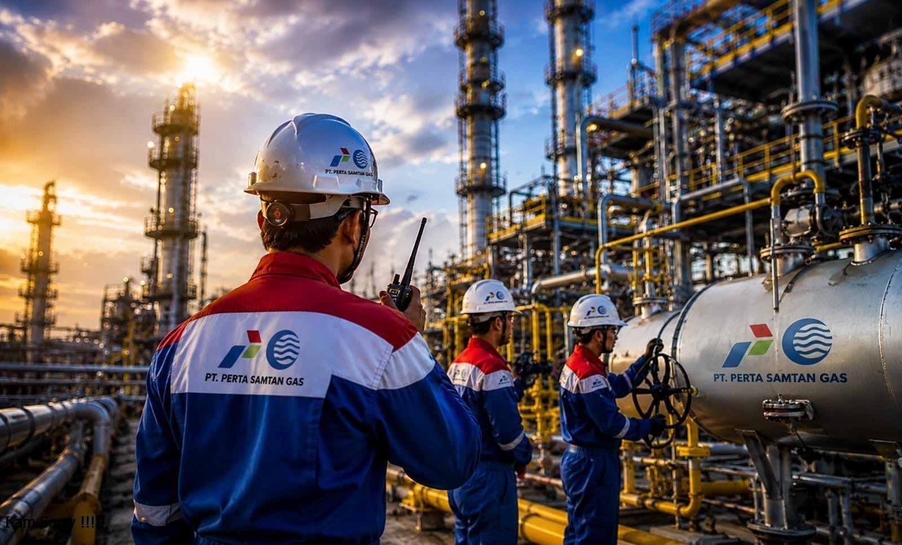
Keunggulan Operasional
Konsisten mencapai produktivitas, stabilitas, dan efisiensi tinggi dengan rekam jejak keberhasilan sejak fase komersial 1 Mei 2013.
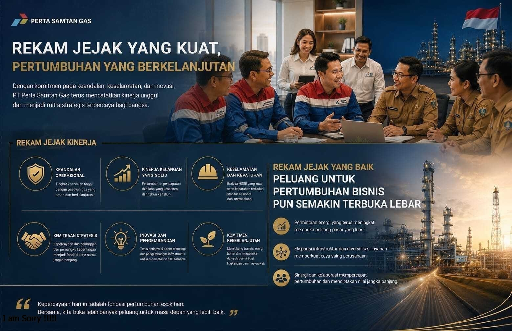
Peluang Bisnis Beragam
Rekam jejak perusahaan memungkinkan eksplorasi peluang bisnis di seluruh wilayah Indonesia dengan potensi pertumbuhan luas.
Penghargaan & Sertifikasi
Bukti komitmen nyata PT Perta-Samtan Gas dalam mempertahankan standar mutu, keselamatan kerja, dan keberlanjutan lingkungan di tingkat nasional.
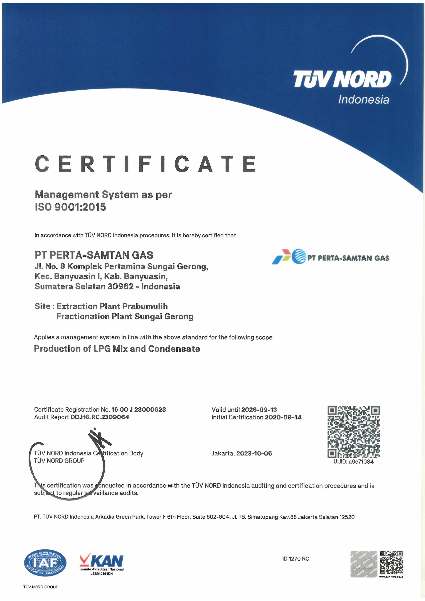
Patra Nirbhaya Karya Utama
Kementerian ESDMPenghargaan atas komitmen tinggi dalam menjaga keselamatan kerja tanpa kecelakaan (*Zero Accident*).
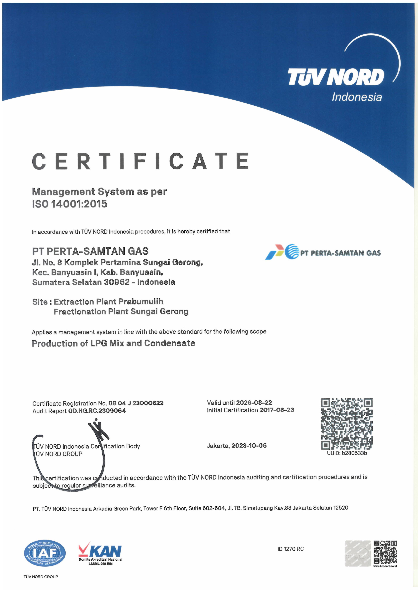
Penghargaan PROPER Biru
KLHK RIApresiasi atas pengelolaan lingkungan hidup yang taat terhadap regulasi dan norma hukum yang berlaku.
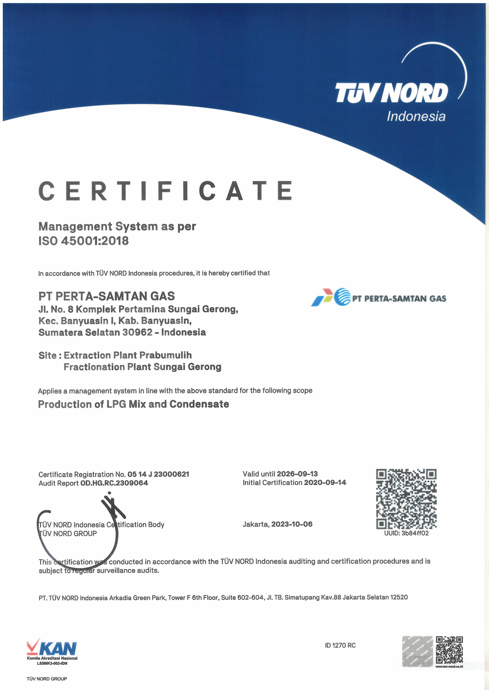
Sertifikasi ISO 9001:2015
Quality ManagementSertifikasi internasional untuk sistem manajemen mutu dan kualitas layanan operasional kilang gas.
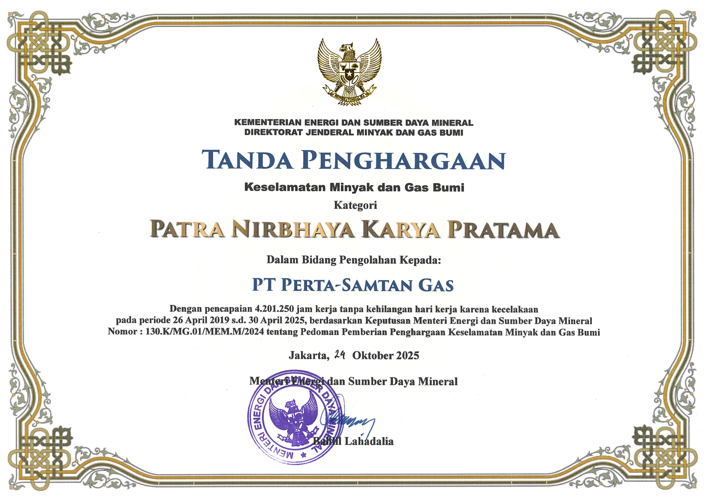
Sertifikasi ISO 45001:2018
OH&S ManagementPengakuan global terhadap penerapan sistem manajemen kesehatan dan keselamatan kerja yang komprehensif.
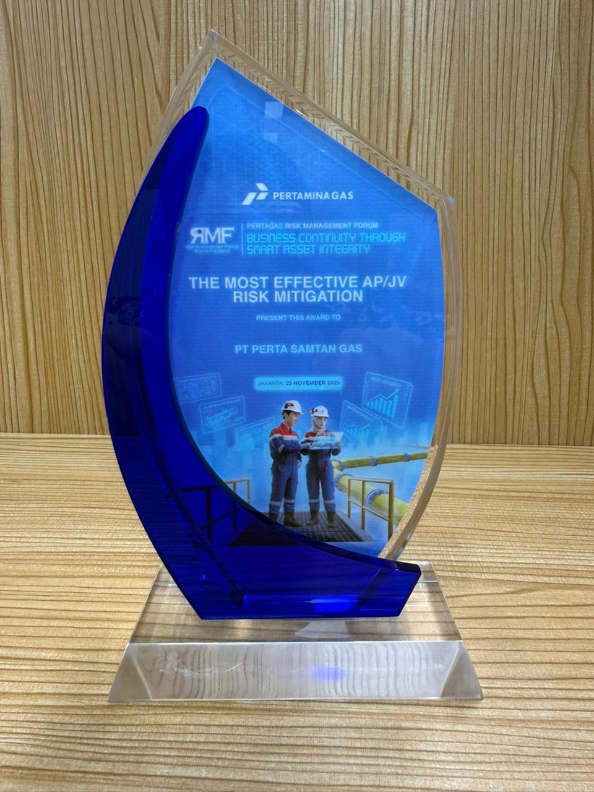
Patra Nirbhaya Karya Utama
Kementerian ESDMPenghargaan atas komitmen tinggi dalam menjaga keselamatan kerja tanpa kecelakaan (*Zero Accident*).
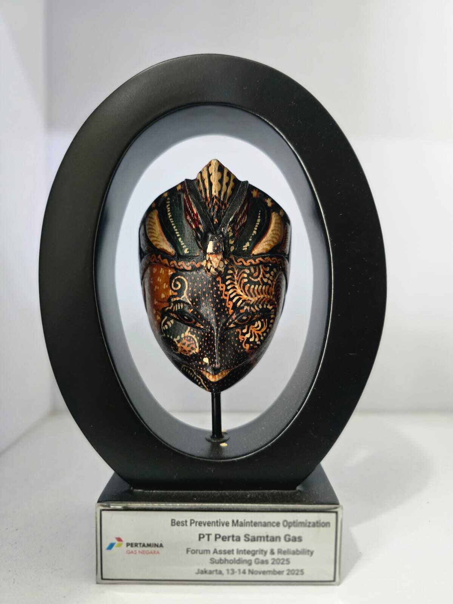
Penghargaan PROPER Biru
KLHK RIApresiasi atas pengelolaan lingkungan hidup yang taat terhadap regulasi dan norma hukum yang berlaku.
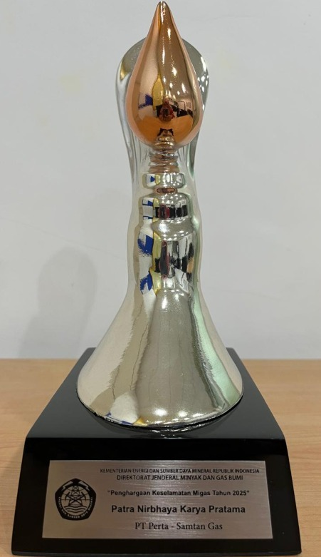
Sertifikasi ISO 9001:2015
Quality ManagementSertifikasi internasional untuk sistem manajemen mutu dan kualitas layanan operasional kilang gas.
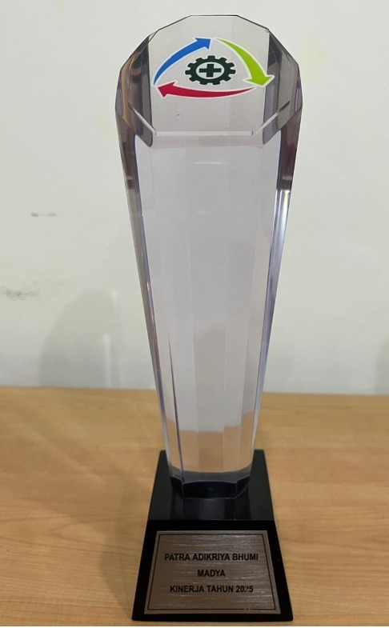
Sertifikasi ISO 45001:2018
OH&S ManagementPengakuan global terhadap penerapan sistem manajemen kesehatan dan keselamatan kerja yang komprehensif.
Proses Bisnis Utama
Visualisasi sistem pengolahan dan rantai distribusi gas terintegrasi dari hulu hingga hilir secara efisien dan berkelanjutan.

Feed Gas Masuk
Hulu ProsesGas alam dari PT Pertamina Hulu Rokan Regional 1 Zona 4.
Ekstraksi NGL
Gas alam diproses di Kilang Ekstraksi Prabumulih untuk memisahkan komponen NGL (Natural Gas Liquids ) lalu dikembalikan ke Pertamina Hulu Rokan.
Pipa Transportasi NGL
⚡ Jarak Pipa ±90 KMProduk NGL bertekanan tinggi ditransfer aman melewati pipa transmisi bawah tanah sepanjang ±90 KM dari Prabumulih menuju Kilang Fraksinasi Banyuasin.
Fraksinasi NGL
Di Kilang Fraksinasi Banyuasin, NGL difraksinasi menghasilkan LPG Mixed (Propane + Butane) 710 MT/hari dan Kondensat (Pentane+) 2.200 bbl/hari.
Distribusi Produk
Hilir DistribusiLPG disalurkan ke Depot Pulau Layang & Jetty 01 RU III menuju Pontianak, Bangka, dan Belitung melalui armada vessel .
Fasilitas Operasional
Dua kilang terintegrasi di Sumatera Selatan, dihubungkan oleh jaringan pipa NGL sepanjang 90 km untuk memastikan distribusi energi nasional yang andal.
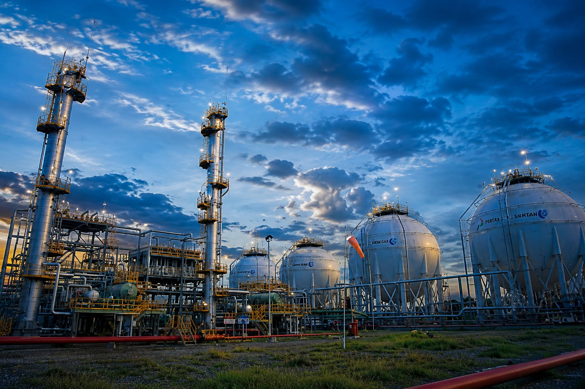
Primary ExtractKilang Ekstraksi Prabumulih
Berfungsi mengekstrak komponen NGL dari gas alam. Feed gas diperoleh dari PT Pertamina Hulu Rokan Regional 1 Zona 4 dengan volume rata-rata ±200 mmscfd.
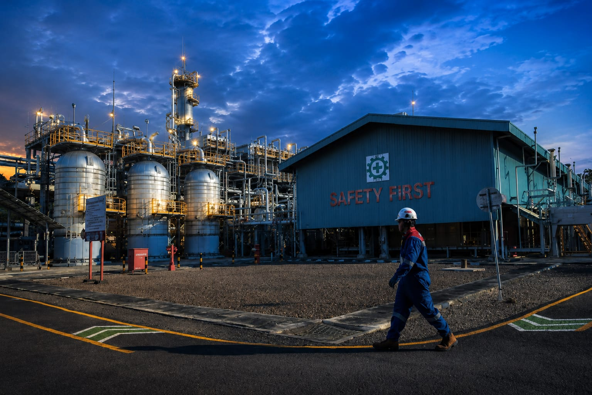
Fractionation PlantKilang Fraksinasi Banyuasin
Memproses NGL dari Prabumulih menjadi LPG Mixed (710 MT/hari) dan Kondensat (2.200 bbl/hari) untuk kebutuhan distribusi domestik nasional.
Produk Utama Perusahaan
Hasil olahan komoditas gas alam bernilai tinggi dari dua kilang terintegrasi yang mendukung program kedaulatan energi nasional.
LPG Mixed
Produk utama berupa gas cair campuran Propane + Butane dengan kapasitas produksi solid 710 MT/hari. Disalurkan langsung ke PT Pertamina Patra Niaga demi pemenuhan Public Service Obligation domestik.
Kondensat
Komoditas sampingan hasil fraksinasi berkualitas ultra-tinggi sebesar 2.200 bbl/hari. Dikembalikan ke hulu ke PT Pertamina Hulu Rokan guna menyokong optimasi pasokan minyak mentah nasional.
Kontribusi Kami
Berkomitmen penuh membangun kemandirian ekonomi masyarakat sekitar wilayah kerja.
Program Santunan Anak Yatim
Kegiatan sosial berkelanjutan sebagai bentuk tanggung jawab perusahaan kepada anak-anak yatim di sekitar area kilang PT. Perta Samtan Gas
Program Pencegahan Banjir
Kegiatan mitigasi banjir dan peningkatan ketahanan masyarakat sebagai bekal masyarakat dalam menghadapi banjir.
Program RLTH
Kontribusi rumah layak huni bagi masyarakat di wilayah sekitar perusahaan.
Program Pengadaan Motor Sampah
Program tanggung jawab sosial perusahaan berupa pengadaan dan penyerahan kendaraan roda tiga pengangkut sampah
Hubungi Kami
Representasi kantor korespondensi resmi kemitraan bisnis.
Fractionation Plant / Head Office
Jl. No. 8 Komperta Banyuasin, Kab. Banyuasin, Sumatera Selatan 30962
021-57958218 / 57958219
info@pertasamtangas.co.id
Extraction Plant
Jl. Nigata, Kelurahan Anak Petai, Kab.Prabumulih, South Sumatera 31125
021-57958218 / 57958219
info@pertasamtangas.co.id
Liaison Office
The East Building lt.11-07, Jl. Dr. Ide Anak Agung Gde Agung Kav. E.3.2 No. 1, Kuningan Barat, Jakarta Selatan 12950
021-57958218 / 57958219
info@pertasamtangas.co.id